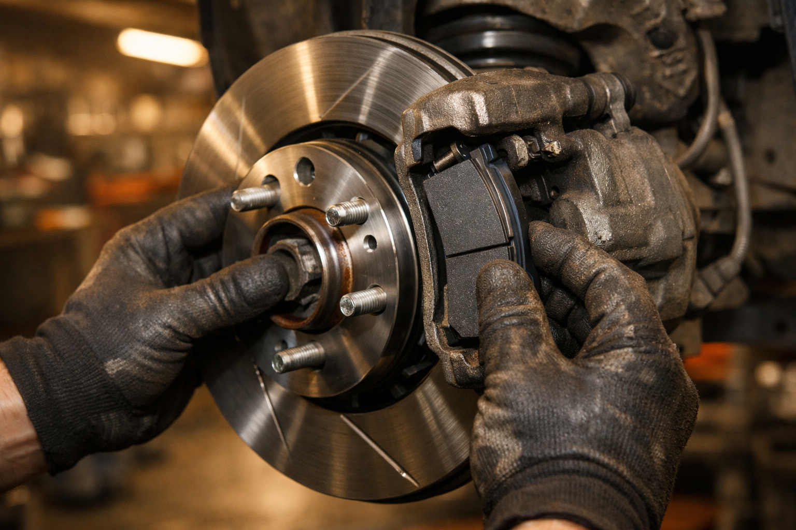
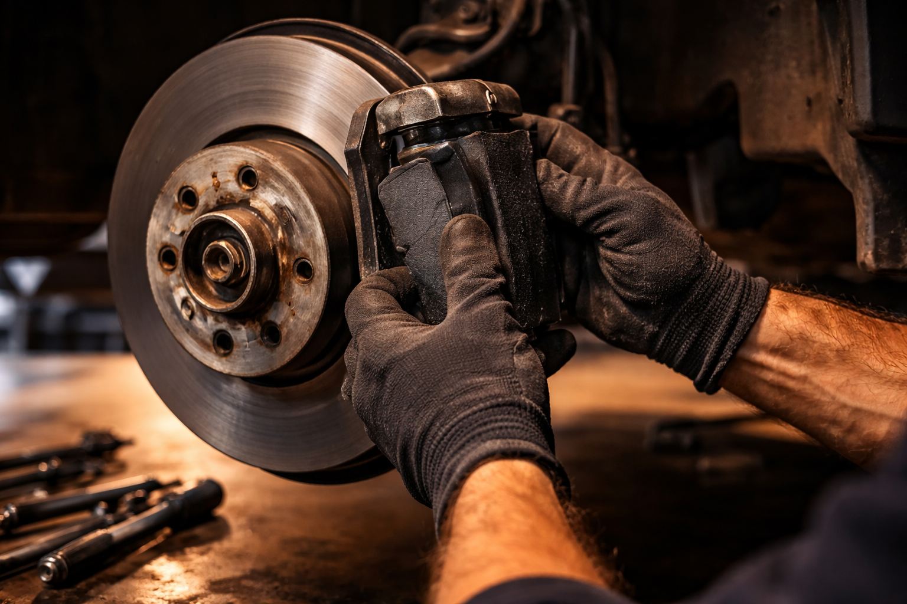

Inspection et remplacement de freins pour voitures et utilitaires. Un freinage sûr et fiable garanti par Ali-Ka depuis 22 ans.

À 50 km/h, votre voiture parcourt 14 mètres par seconde. Des plaquettes de frein usées à 80 %, c'est plusieurs mètres de distance d'arrêt en plus. En milieu urbain, ces mètres séparent un simple coup de frein d'un accident grave. Le système de freinage n'est pas un composant parmi d'autres — c'est le dernier rempart entre vous et l'obstacle.
Chez Ali-Ka, Avenue des Casernes 10 à Etterbeek, on ne plaisante pas avec les freins. Plaquettes, disques, étriers, liquide de frein : nos mécaniciens vérifient tout, pièce par pièce, et ne remplacent que ce qui en a vraiment besoin. On ne va pas vous changer des disques pour le plaisir — ce qui tient, ça reste.
Bruxelles est l'une des villes les plus exigeantes pour un système de freinage. Circulation dense à Etterbeek, arrêts-redémarrages incessants autour des ronds-points de Schuman, embouteillages sur l'Avenue de la Couronne à Ixelles, pavés irréguliers de Schaerbeek — vos freins encaissent des centaines de sollicitations par trajet. Cette usure silencieuse s'accumule. Quand vous la remarquez, il est souvent déjà tard. Franchement, un contrôle régulier chez Ali-Ka, c'est le genre de chose qui vous évite les mauvaises surprises.
Un diagnostic de freins bâclé est pire qu'un diagnostic absent — il donne une fausse impression de sécurité. C'est pourquoi chaque véhicule qui entre chez Ali-Ka pour un problème de freinage passe par un protocole d'inspection rigoureux, sans exception :
Chaque étape compte. Un liquide de frein dont le point d'ébullition a chuté peut provoquer un vapor lock en descente prolongée — la pédale s'enfonce, et rien ne se passe. Un disque voilé de quelques dixièmes de millimètre suffit à créer des vibrations qui dégradent le confort et la précision du freinage.
Nous intervenons sur toutes les marques de voitures et utilitaires. Citadine pour vos allers-retours entre Etterbeek et le quartier européen, berline familiale, ou utilitaire sollicité quotidiennement entre Woluwe-Saint-Pierre et Auderghem — Ali-Ka adapte chaque intervention aux spécificités exactes de votre véhicule.
On va pas se mentir : trop de conducteurs attendent un échec au contrôle technique pour s'occuper de leurs freins. Les chiffres parlent d'eux-mêmes : selon l'AWSR, les défauts de freinage représentent plus de 40 % des revisites au contrôle technique en Belgique. Cela signifie que des milliers de véhicules circulent chaque jour avec un freinage dégradé — parfois sans que le conducteur en soit conscient. Les problèmes d'échappement et d'émissions représentent l'autre grande cause de refus — autant tout vérifier en une seule visite.
Les signaux d'alerte sont pourtant clairs. Un grincement métallique au freinage indique que la garniture est usée jusqu'au support. Une pédale qui s'enfonce trahit un problème hydraulique ou des plaquettes amincies. Des vibrations dans le volant signalent un disque voilé. Un allongement perceptible de la distance d'arrêt signifie que l'ensemble du système perd en efficacité.
Ne négligez aucun de ces symptômes. Un diagnostic à Etterbeek chez Ali-Ka permet d'identifier rapidement la cause exacte et d'intervenir avant que le problème ne s'aggrave. Et parce que le freinage ne fonctionne jamais seul, pensez aussi à faire vérifier vos pneus et votre suspension — un pneu lisse ou un amortisseur fatigué réduit l'efficacité de freins pourtant neufs.
Les plaquettes de frein doivent généralement être remplacées tous les 30 000 à 50 000 km. En conduite urbaine à Bruxelles, l'usure est plus rapide. Chez Ali-Ka à Etterbeek, nous vérifions l'épaisseur de vos plaquettes à chaque visite.
Le prix dépend du véhicule et des pièces à remplacer. Ali-Ka propose des tarifs compétitifs avec des pièces de qualité. Appelez le 02 647 47 01 pour un devis gratuit.
Grincement ou sifflement au freinage, pédale molle, distance de freinage allongée, voyant frein allumé : ces signes indiquent une usure. Rendez-vous chez Ali-Ka à Etterbeek pour un diagnostic rapide.
Oui, Ali-Ka remplace les freins avant et arrière sur toutes les marques. Nous intervenons sur les systèmes à disques et à tambours.
Chez un garage indépendant comme Ali-Ka à Etterbeek, le remplacement des plaquettes de frein est en moyenne 20 à 30 % moins cher qu'en concession, avec des pièces de qualité équivalente. Appelez le 02 647 47 01 pour un devis adapté à votre véhicule.